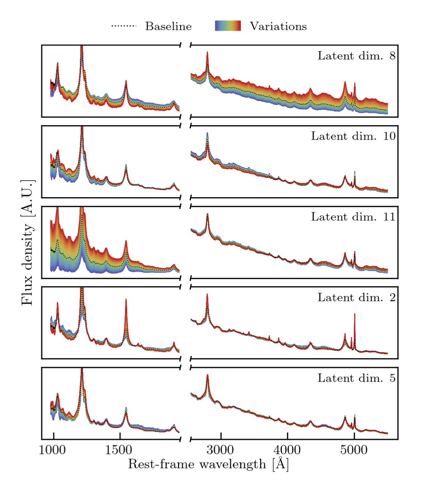
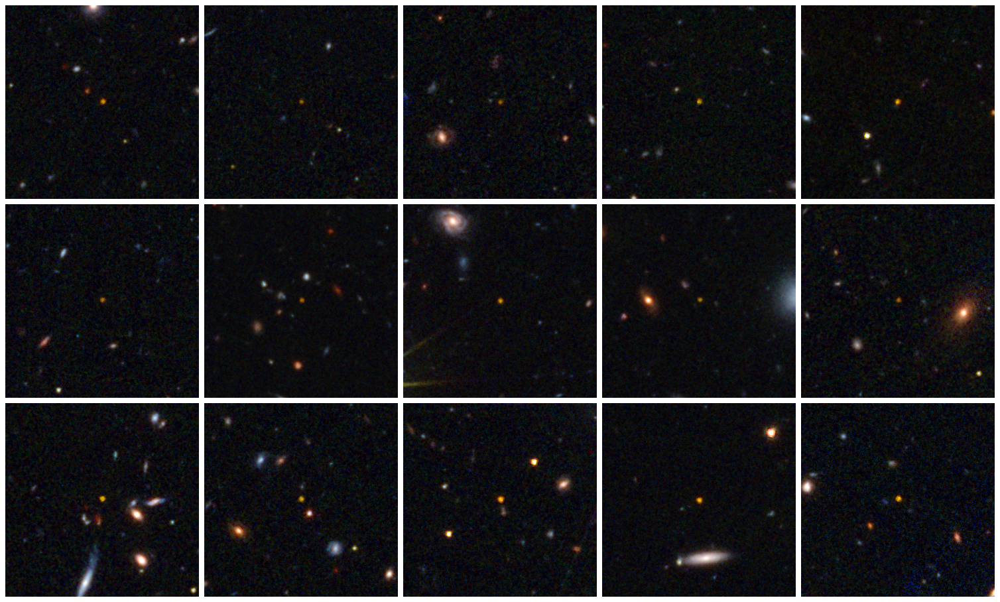

Research Highlight
Quasar discovery at the redshift frontier
The search for the most distant quasars
In the coming years, the Euclid space mission, launched in 2023, the Vera Rubin Observatory and its Legacy Survey of Space and Time, and the Nancy Grace Roman Space Telescope will build the deepest optical and near-infrared maps of the extragalactic sky. These unprecedented data sets lay the foundation for the discovery of quasars up to redshifts of ~10, allowing us to truly understand their formation processes and early growth. My group works on developing new machine-learning driven quasar selection strategies tailored to these surveys to conduct a census of the most distant quasars.

Quasar Selection with machine learning classification
For the design of the Extremely Luminous Quasar Survey (ELQS) I developed a machine learning
classification algorithm based on random forests to identify the most luminous quasars at z=3-5.
The algorithm was trained on a large sample of known quasars and stars, and applied to panchromati
photometric data from the Sloan Digital Sky Survey (SDSS), the Two Micron All Sky Survey (2MASS), and the Wide-field Infrared Survey
Explorer (WISE).
We demonstrated that random forests remains a highly viable method even at higher redhifts, z≈4.8-6.3, where
it outperforms traditional color selection methods.
For our Euclid quasar selection strategy we continue to use tree-based methods, in particular
Extreme Gradient Boosting (XGBoost).
As there is not sufficient empirical training data for z>6.5 quasars, we have developed a
generative model based on a Variational Autoencoder (VAE), Quasar unsupervised encoder and synthesis tool (QUEST),
that can produce synthetic quasar spectra.
The image on the right shows spectral variations in 5 of the 12 latent dimensions of the VAE model.
The spectra are modified to account for the intergalactic medium absorption and used to calculate
synthetic photometry for the classification task. At present our strategy is best described in
Section 3.2 of Yang, D. et al. 2026.
Relevant publications
- The Extremely Luminous Quasar Survey in the SDSS Footprint. I. Infrared-based Candidate Selection (Schindler et al. 2017)
- The Extremely Luminous Quasar Survey in the Pan-STARRS 1 Footprint (Schindler et al. 2019b)
- Random Forests as a Viable Method to Select and Discover High-redshift Quasars (Wenzl, Schindler et al. 2021)
- QUEST: Quasar unsupervised encoder and synthesis tool: A machine-learning framework for generating quasar spectra (Guarneri et al. 2026)

Quasar Discoveries with Euclid
Since 2024 we have been exploiting the Euclid Wide Survey on-the-fly data in collaboration with the Euclid Consortium's
QSO work package. Our first discovery publication, showcases 31 new z>6.5 quasars, including the two most
distant quasars known to date at z=7.69 and z=7.77.
The collage on the left shows 15 false-color cutout images of the 31 newly discovered quasars.
The QSO work package pools together observational resources for ground-based follow-up observations.
My postdoc Francesco Guarneri is leading discovery efforts with ESO's VLT and has been instrumental in winning a Gemini Large and Long Program.
In addition, the QSO work package has secured time on the Hubble Space Telescope (HST) and
the James Webb Space Telescope (JWST) for spectroscopic confirmation. I am leading the JWST survey program
GO 11173 (PI: J. Schindler) to obtain NIRSpec PRISM spectra of the faintest Euclid candidates.
Relevant publications
Associated press releases: